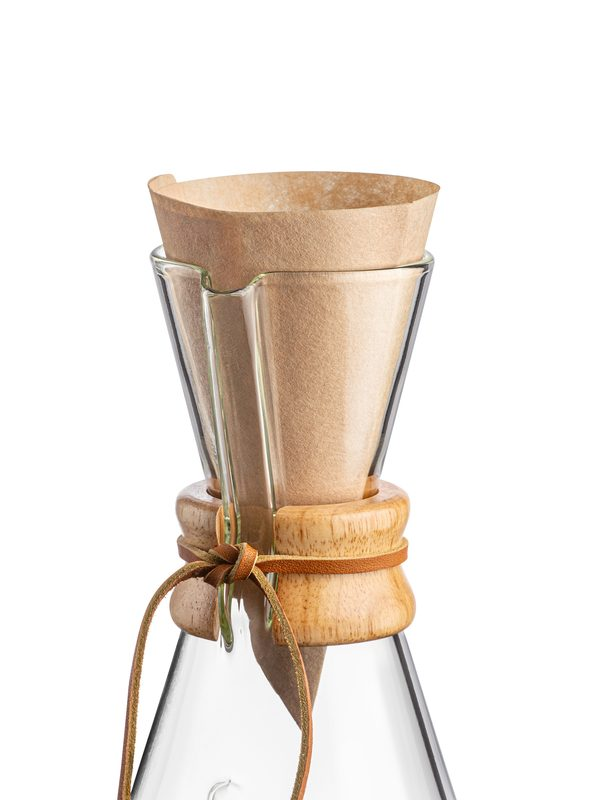

Coffee & Tea Stocking Stuffers Under $30: Mugs, Mini Brewers and Filters
Specs and details come from the manufacturer and official pages listed under Sources. We have not hands-on tested these products or tours; nothing here is a personal review.
These all came in under $30 on Amazon when we checked on Oct 27, 2026. Prices move a lot around Black Friday, so treat the cap as a guide. The picks lean useful over novelty: things a coffee or tea drinker will reach for every day.
Mini brewers
Bodum Chambord 3-Cup (12 oz) French Press
Best for: one-mug-a-day drinkers and small counters
- 0.35 L (12 oz); Bodum counts a cup as about 4 oz
- Borosilicate glass carafe in a chrome stainless-steel frame
- Stainless mesh plunger, so no paper filters
- Bodum's guide: coarse grounds, about 4 minutes, then press
Specs per: Bodum product page (1923-16) (accessed 2026-10-27).
OXO Brew Single Serve Pour-Over Coffee Maker with Water Tank
Best for: people who want pour-over without learning a pouring technique
- Brews up to 12 oz (tank has measurement markings)
- Water tank drips water through holes so the pour is automatic
- Lid doubles as a drip tray
- Uses #2 cone filters; 10 included
- Dishwasher safe
Specs per: OXO product page (accessed 2026-10-27).
Mugs
Bodum Bistro Double Wall Mugs, 10 oz, Set of 2
Best for: tea and latte drinkers who like seeing the drink
- Set of two 0.3 L (10 oz) mugs
- Double-wall, mouth-blown borosilicate glass
- Dishwasher safe (Amazon listing)
Specs per: Bodum product page (10604-10US4); Amazon listing (retailer) (accessed 2026-10-27).
CHEMEX Double Walled Glass Mug (10 oz)
Best for: CHEMEX owners, or a pretty mug for someone who drinks tea or iced coffee
- 10 oz (300 ml)
- Double-walled borosilicate glass; the filled mug echoes the CHEMEX shape
- Amazon listing: dishwasher safe, top rack
Specs per: CHEMEX product page; Amazon listing (retailer) (accessed 2026-10-27).
For someone who already owns a small CHEMEX
CHEMEX Bonded Filters, Natural Half Moon (FP-2N, 100 ct)

Best for: anyone who already owns a 3-cup CHEMEX or a FUNNEX
- 100 unfolded, unbleached half-moon filters
- Fit the 3-cup Classic, Glass Handle and Handblown CHEMEX and the FUNNEX
Specs per: CHEMEX product page (accessed 2026-10-27).
Check which model they have first: the half-moon FP-2N fits the 3-cup models and the FUNNEX, not the 6-cup and up.
Matching gift to person
| If they... | Try |
|---|---|
| drink one mug a day | Bodum Chambord 3-cup |
| want pour-over without technique | OXO single-serve pour-over |
| drink tea or lattes | Bodum Bistro mugs |
| own a CHEMEX | CHEMEX double-walled mug or filters |
FAQ
- Can you make tea in a French press?
- Many people use a French press for loose-leaf tea. Rinse it well between coffee and tea, because coffee oils can carry over.
- What filters does the OXO single-serve pour-over use?
- OXO says #2 cone filters; 10 come in the box.
Sources
- Bodum Chambord 3-Cup (12 oz) French Press: Bodum product page (1923-16) (accessed 2026-10-27)
- OXO Brew Single Serve Pour-Over Coffee Maker with Water Tank: OXO product page (accessed 2026-10-27)
- Bodum Bistro Double Wall Mugs, 10 oz, Set of 2: Bodum product page (10604-10US4) (accessed 2026-10-27)
- Bodum Bistro Double Wall Mugs, 10 oz, Set of 2: Amazon listing (retailer) (accessed 2026-10-27)
- CHEMEX Double Walled Glass Mug (10 oz): CHEMEX product page (accessed 2026-10-27)
- CHEMEX Double Walled Glass Mug (10 oz): Amazon listing (retailer) (accessed 2026-10-27)
- CHEMEX Bonded Filters, Natural Half Moon (FP-2N, 100 ct): CHEMEX product page (accessed 2026-10-27)
Prices aren't listed because they change often; check the current price with the retailer before buying. Spotted an error? See the contact details on our About page.